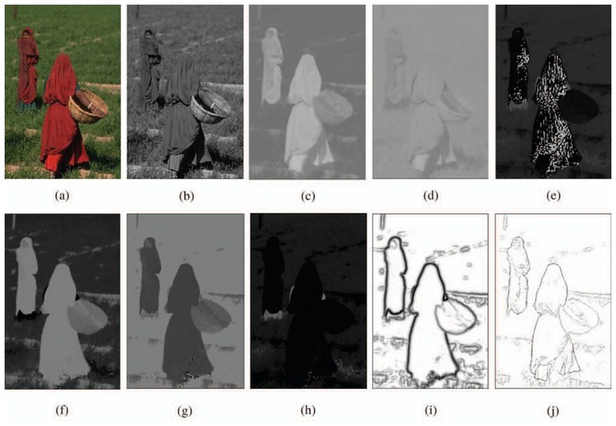

Finding object outlines in photos by combining seven cues and superpixels
A contour is the line where one object ends and another begins. Finding it is a basic step in computer vision, and it is harder than it sounds, because shadows, texture and noise also create sharp changes in a picture. We built a detector that looks at an image through seven different channels. It then uses superpixels, small patches of similar pixels, to remove the edges that are not real object boundaries.
The problem
Classical edge detectors look for places where brightness changes quickly. They cannot tell an object boundary from a shadow, a patch of texture or a speck of noise, so they produce false edges. They also break real contours into pieces where the boundary is faint. Methods that fix this by linking edges together tend to ignore the picture as a whole, or take a long time.
Seven views of one image
We turn each image into seven channels. Three come from the CIELAB colour space, which describes brightness and two colour axes in a way that is closer to human perception. The fourth is hue, the pure colour, taken from the HSV colour space. Two objects of the same brightness but different colour then differ in at least one channel. The last three come from an "intrinsic image" built from how much each pair of red, green and blue values differs in the original.

In each channel we measure "busyness", an idea from Dondes and Rosenfeld in 1980: the average difference between pairs of neighbouring pixels in a small window. Around each pixel we compare busyness histograms on the two sides of a circle, over eight orientations and three image sizes, and take the strongest response. The seven channel results are added up with weights we learned from the training images, by repeatedly nudging the weights to raise the F-measure. That is a score that balances finding true edges against reporting false ones.
Superpixels as a filter
Next we cut the image into superpixels with SLICO, a version of the SLIC method that needs no tuning of patch compactness. Superpixel borders tend to follow real object borders. We keep only those edges that lie close to a superpixel border.
The number of superpixels matters. Too few and real edges are lost, too many and false edges survive. We grouped the 200 training images by scene type, using k-means clustering on spatial-pyramid and colour-histogram features. A statistical method, the gap statistic, found 11 groups. For each group we found, by gradient ascent on the F-measure, the superpixel count that worked best. A new image gets the count of the group whose centre is nearest.
What we found
We tested on the Berkeley Segmentation Dataset (BSDS300), where people drew the boundaries they see in each photo. Our average precision was 0.65, second of nine methods, behind only gPb at 0.68. The remaining methods in the table scored between 0.62 and 0.43. Our speed was listed as 1/47 against 1/240 for gPb in the paper's "frames per second" column, which makes ours roughly five times faster.

What it does not do
The results are preliminary, and the paper says so. Our maximum recall of 0.91 sits below Canny (0.96), Felzenszwalb and Huttenlocher (0.99) and Sobel (0.97). We did not use texture, which we plan to add as an extra channel, together with colour relations between channels.
The authors call the results preliminary but good enough to show the value of using several cues together.
How to cite the paper
S Choudhuri, N Das, Swarnendu Ghosh, M Nasipuri (2016). A multi-cue information based approach to contour detection by utilizing superpixel segmentation. International Conference on Advances in Computing, Communications and Informatics (ICACCI), pp. 1057–1063 · IEEE.